Understanding People
At the core of my journey is a deep understanding of people. My customer-focused career has allowed me to engage with individuals from diverse backgrounds, sharpening my empathy and enhancing my ability to connect genuinely.
As a UX designer driven by a deep curiosity about human behaviour, I want to transform my travel experiences into valuable design insights. Each cultural encounter serves as a living laboratory for user research. The stamps in my passport represent more than travel memories — they are blueprints of empathy that enhance my ability to create intuitive, user-centred designs that bridge both geographical and digital boundaries.
What truly makes me happy at work is the sense of fulfilment I experience when I take ownership of my process. In those moments — when I dive deep into research, uncover new insights, and collaborate to exchange and refine ideas — I feel most alive and engaged. I thrive on the journey of discovery, but what excites me even more is witnessing the ripple effect of those efforts: solutions that drive positive change for users and have a meaningful impact on the business. It's about blending curiosity, creativity, and purpose to make a difference.
My journey
My path has been a rich tapestry of experiences, weaving together professional and personal encounters.
At the core of my journey is a deep understanding of people. My customer-focused career has allowed me to engage with individuals from diverse backgrounds, sharpening my empathy and enhancing my ability to connect genuinely.
Moments of inspiration led my curiosity and creativity to flourish. I found myself redesigning company magazines, creating engaging presentations, and visualising complex ideas through process mapping — passion projects that allowed me to express my creativity and problem-solving abilities.
As a member of the neurodivergent community and an introvert, I faced challenges in expressing my ideas within a neurotypical world. My creative pursuits became my voice, opening doors to opportunities and allowing me to showcase my unique perspective.
Reflecting on my journey, I see that every role and project has been essential to my professional growth. Growth isn't always linear — our unique paths, including obstacles, shape our strengths.
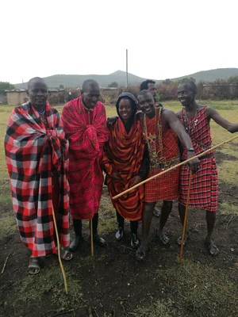
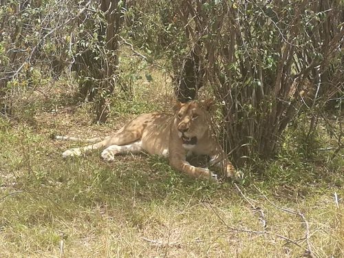
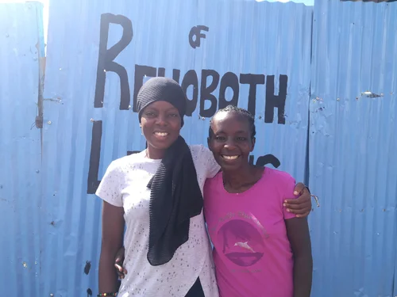
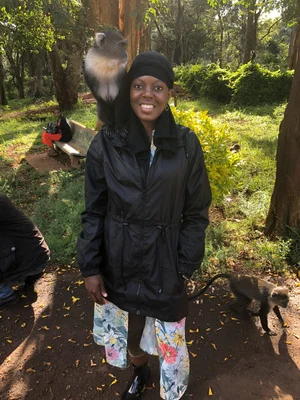
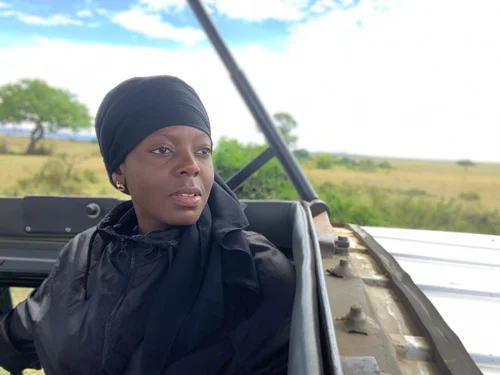
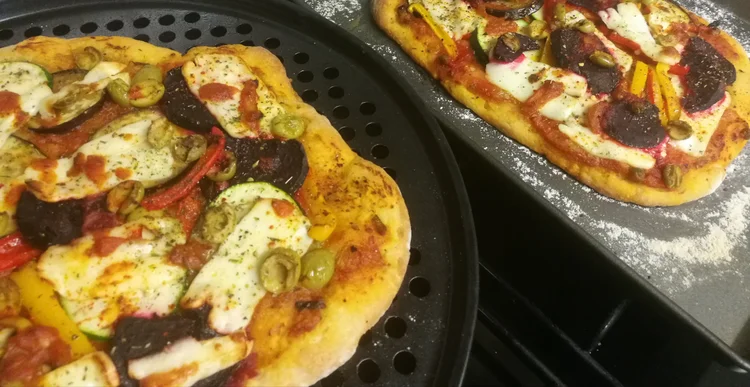
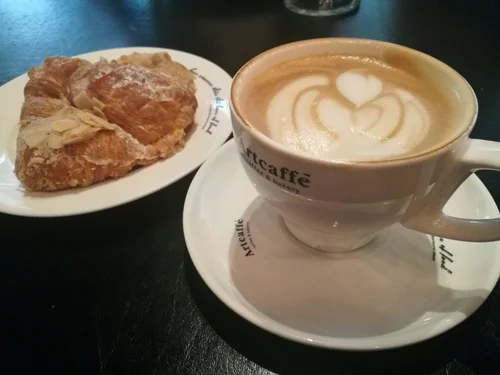
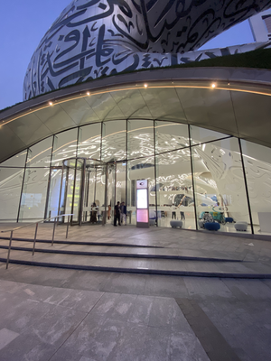
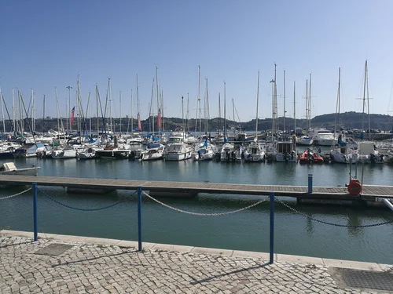
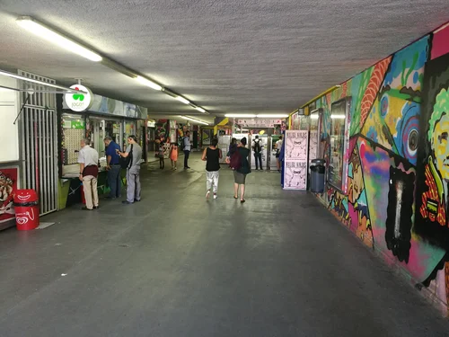
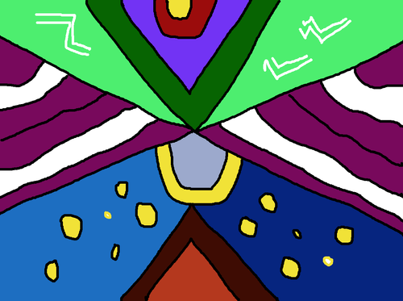
Creativity is inventing, experimenting, growing, taking risks, breaking rules, making mistakes, and having fun.
Outside of work
Travelling is my way to reset and recharge, inspiring me to create and connect spontaneously. Despite cultural differences, I often find familiarity with the people I meet — the sense of openness and acceptance allows me to explore new places through the encounters and individuals I connect with.
I love creating abstract and digital art. I've also tried coding, but I prefer the freedom of a paintbrush and a blank canvas to lose myself when I need to escape worldly ways.
As a lifelong learner, I am curious about the world around me. Whether immersing myself in a thought-provoking podcast or venturing into a completely unrelated topic, I find joy in continuously expanding my understanding and challenging my existing knowledge.
Say hello
Seeking a remote UX role in a fast-moving, product-led environment